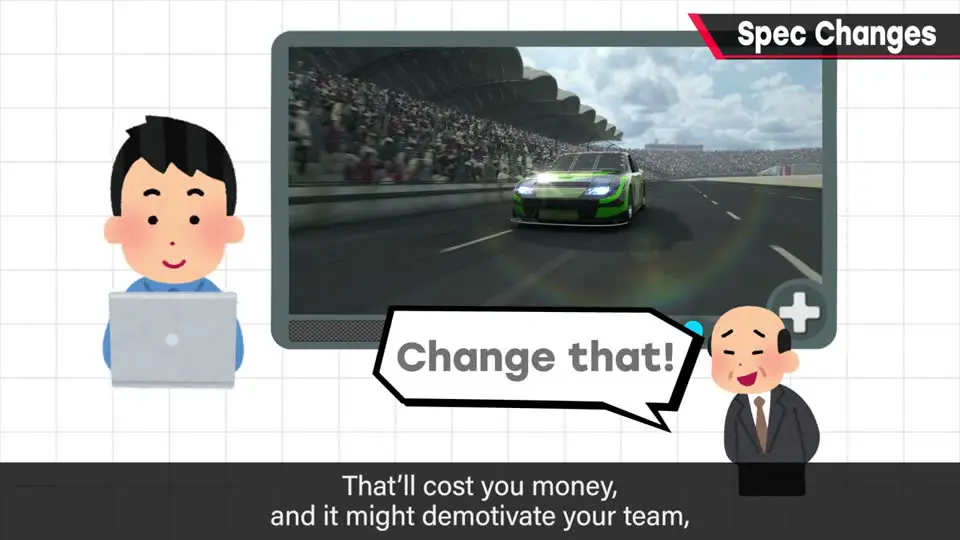
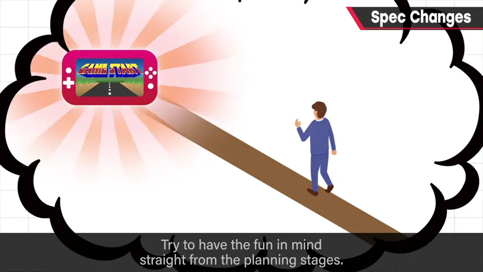
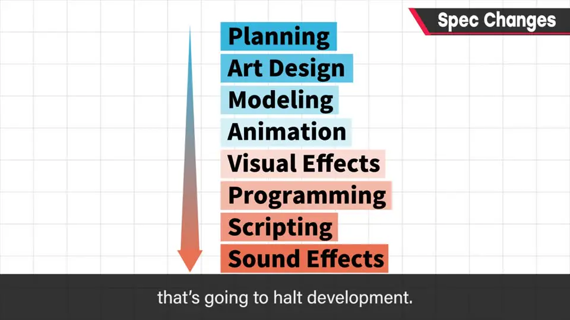
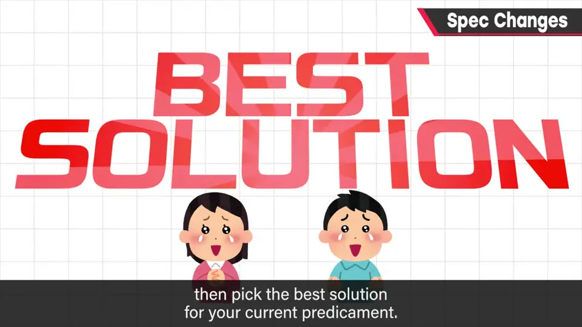

速览
中途更改规格会让已有工作白费、绕远路、增加成本、打击士气，应尽量避免；但再周密的计划不做出来也会有发现不了的问题，所以也必须灵活。因「不好玩」而改规格应尽量避免——最好从企划阶段就把乐趣想清楚。改与不改只能具体情况具体分析，但明知有问题还硬做没有意义。发现问题就立刻说，事后诸葛亮毫无帮助；借助集体智慧把能想到的手段全部摆上桌，从短期和长期两方面选出当下最优解。樱井自己通常当场决断，但需要充分、准确的信息。
1. 规格变更：尽量避免，但要灵活 0:01
中途更改游戏规格（仕様）应尽量避免，但也必须保持灵活。
为什么想避免：之前做的东西可能白费、开发路线绕远；直接增加成本，还可能打击团队士气。
为什么又不可避免：
- 再周密的计划，不实际做出来也会有发现不了的问题。要把设想变成谁都能看到的形态，只能把它做完；而若想用文档把一切预先写到「能做完」的程度，写文档的工作量可能堪比做一整款游戏。
- 同样的东西，换了程序员等人，内部实现也大不相同；因进度原因改规格也很常见。


2. 成品是多种要素的组合 1:32

成品是多种要素的组合。某个环节延误，或整体进度吃紧，制作就推进不下去。改规格的理由多得数不清：
- 有了更好的方法或技术；
- 为了削减工作量；
- 性能比预想的低……
该不该改，只能具体情况具体分析。但为了「不改规格」而明知有问题还继续做，没有意义。
3. 发现问题马上说，用集体智慧选最优解 2:35
发现问题就立刻说。事后说「我早就觉得是这样」毫无帮助——这对每位成员都适用，无一例外。玩家发现问题也改不了，但开发人员有可能改。
正因为面对不讲理的计算机，常有无法解决的矛盾，所以集体智慧不容小觑：把能想到的手段全部摆上桌，从中选出当下的最优解；而且要同时从短期和长期两方面考虑。

樱井自己的做法：遇到课题时不花时间，当场立刻下结论——犹豫浪费时间。但判断需要信息，信息越不准确越容易判断失误，所以他希望把已知的情况全部听到。团队内部为「该怎么去商量」反复讨论、拖延时间，也是损失：开发一直在推进，商量得越早，损失越小。
（任何成员）"] --> B["立刻告诉相关的人
不要事后诸葛亮"] B --> C["把已知信息
全部摆出来"] C --> D["集体智慧：
列出所有可行手段"] D --> E{"短期 + 长期
两方面权衡"} E --> F["选出当下最优解
（尽快决断）"]
自测题
1. 为什么规格变更应尽量避免，又无法完全避免？
避免：已做的东西可能白费、开发绕远、增加成本、打击士气。无法避免：不实际做出来就有发现不了的问题；想用文档预先写尽一切，工作量可能堪比做一整款游戏；换了程序员等实现也不同；进度原因也常要改。 0:09
2. 开发成员发现规格有问题时应该怎么做？团队如何决定？
立刻告诉别人（事后说「早就觉得」毫无帮助，人人适用）。利用集体智慧把能想到的手段都摆上桌，从短期和长期两方面考虑，选出当下最优解。 2:37
3. 樱井自己面对课题时怎么做决定？需要什么？
不花时间，通常当场立刻下结论；但判断需要信息，信息越不准确越容易出错，所以希望把已知情况全部听到。为「该怎么商量」拖延也是损失，商量越早损失越小。 3:24